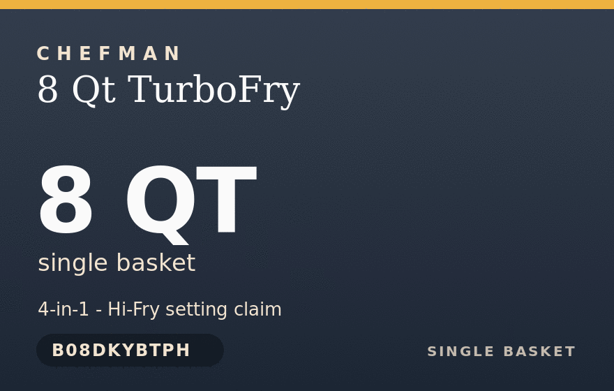

Product · Air fryers
Chefman 8 Qt TurboFry Air Fryer

The simple one: a single 8-quart basket, 4-in-1 functions, one drawer to wash. If the dual basket is for cooking two things at once and the 26-quart oven is for baking nights, this is the middle path — one big basket with the shallowest depth in this set (12.75 inches listed). It is also the variant page of a multi-variant listing: the same ASIN family covers 6, 8, and 9-quart models, and this record is the 8-quart variant of that family.
Every field the listing publishes
| Listing field | What the listing states | Source |
|---|---|---|
| Capacity | 8 quarts | B08DKYBTPH |
| Exterior dimensions | 12.75"D × 13.5"W × 10"H | B08DKYBTPH |
| Weight | 12.8 pounds | B08DKYBTPH |
| Temperature range | 200–400°F (Product Information); 450°F Hi-Fry (title claim) — the listing tells this story two ways | B08DKYBTPH |
| Power | 120 Volts / 1700 Watts | B08DKYBTPH |
| Special features | Automatic Shut-Off, LED Shake Reminder, Programmable | B08DKYBTPH |
| Material · Color | Plastic, Stainless Steel · Stainless steel | B08DKYBTPH |
| Warranty | “1-Year Limited Warranty”; listing wording — no manufacturer warranty period is stated | B08DKYBTPH |
| Model number · UPC | RJ38-SQSS-8T · 816458024518 | B08DKYBTPH |
Who this one fits
Consider it if you cook larger batches of one thing — a family's worth of fries or wings — and would rather wash one basket than two. At 12.75 inches listed, it is the shallowest depth here, which matters on a crowded counter.
Look elsewhere if you need two foods running at two settings (the dual basket), or a published range that dips to 75°F for oven-style work (the Emeril).
Check next
Source: official listing B08DKYBTPH (S12 on the source register). No price or customer rating is shown here; both live on the listing.